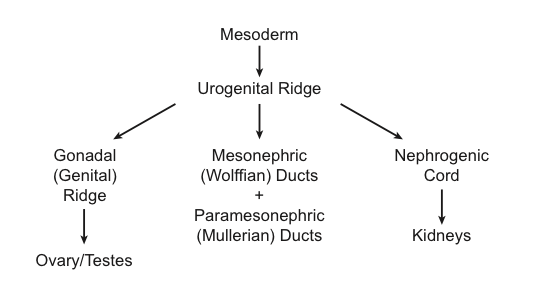
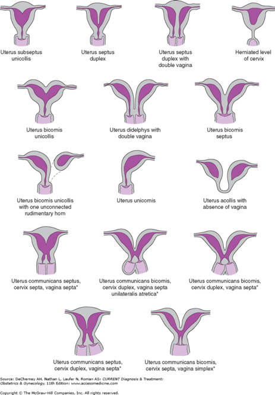

Questions
Click question to reveal answer.
How would you define "Mullerian Anomalies"?
Incomplete/anomalous formation/fusion of Mullerian (paramesonephric) ducts resulting from errors of organogenesis, fusion, or septal resorption
What are the embryologic origins of the reproductive system?
Embryonic disk transforms into ectoderm, mesoderm and endoderm during the 3rd week.

How does sexual differentiation occur?
- SRY gene (Sex-determining Region of the Y chromosome) in the short arm of Y chromosome encodes the testis-determining factor (TDF)
- SRY → chain of events leading to gonad differentiation into testes and production of Anti-Mullerian hormone and testosterone
What are the key hormones in male fetal development:
- Testosterone → persistence and differentiation of Wolffian (mesonephric) ducts → differentiation into epididymis, ductus deferens, and ejaculatory ducts
- Anti-Mullerian hormone (produced by Sertoli cells) → regression of Mullerian ducts<
What conditions are required for normal female fetal development?
- Absence of TDF, testosterone, + Anti-Mullerian hormone → regression of Wolffian ducts and persistence of Mullerian (paramesonephric) ducts → differentiates into uterine (fallopian) tubes, uterus, uterine cervix, and upper vagina
- Therefore, the default is female unless the system is exposed to gene expression of the Y chromosome → SRY → androgenic steroids + anti-Mullerian hormone
What is Mullerian agenesis (Mayer-Rokitansky-Kuster-Hauser Syndrome aka MRKH)?
- XX karyotype
→ ovaries, normal estrogen production
→normal external female genitalia - Lower vagina normal
- Upper vagina, uterus, fallopian tubes absent (all are part of Mullerian tract)
Would an MRKH patient have normal breast development?
Yes, Normal ovarian function normal → normal breast development, normal secondary sexual characteristics, normal LH + FSH
What would the karyotype be for an MRKH patient?
Normal 46 XX karyotype
What other complications may be associated with MRKH?
40-50% of patients have renal complications because paramesonephric system develops with the renal system → kidneys develop from metanephros all originates from urogenital ridge
What are some consequences of abnormal or incomplete fusion of Mullerian ducts?
- Uterus Didelphys - when inferior parts of the Mullerian ducts do not fuse. (single or double vagina)
- Bicornuate Uterus - when superior portion of the uterine body do not fuse.
- Unicornuate Uterus +/- rudimentary horn - one duct poorly developed → remains as horn
- Septate uterus (complete or partial) - incomplete resorption of the fibrous septum between the two uterine horns
- Arcuate Uterus - Near complete resorption of the uterovaginal septum, small indentation at the fundus

Would a 45, X individual (Turner Syndrome) have normal development of Mullerian structures?
Yes, Mullerian structures would develop similar to an XX female since there is absence of SRY gene = absence of testosterone + anti-Mullerian hormone. However, complete ovarian differentiation seems to require 2 X chromosomes females with 45, X karyotypes have ovarian dysgenesis/streak ovaries
What characteristics would be present in an XY person with a mutation in anti-Mullerian hormone or anti-Mullerian hormone receptor?
Presence of male reproductive structures with persistence of Mullerian duct structures. This person may have an upper vagina, uterus, and uterine tubes as well as ductus deferens, undescended testes, and male external genitalia given the influence of testosterone. The inability to produce or respond to AMH causes lack of regression of Mullerian duct structures in an otherwise normal male individual.